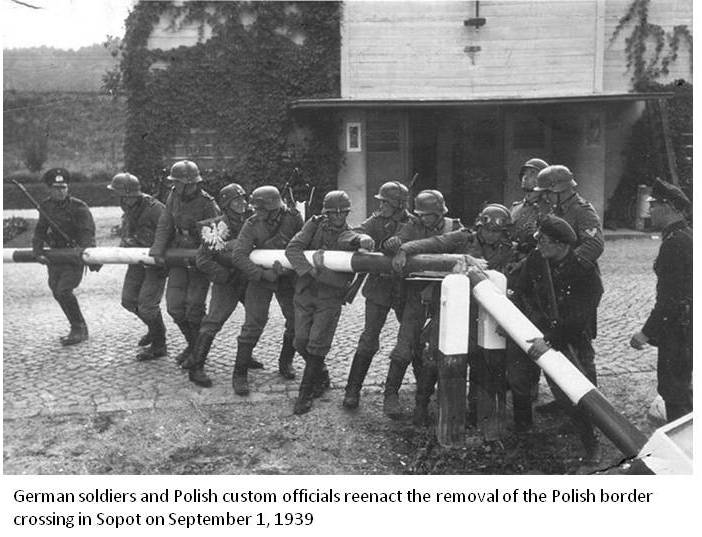
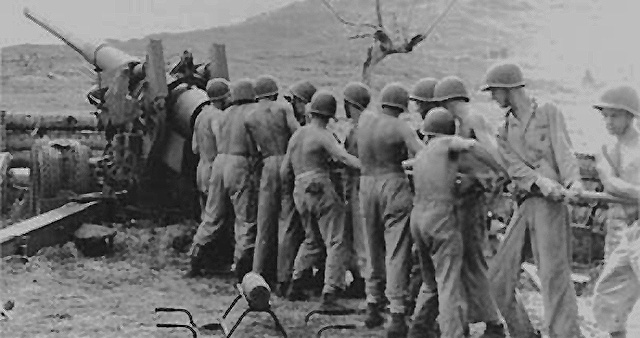
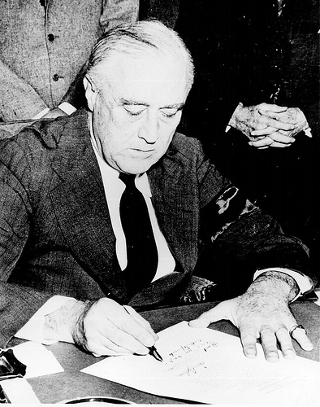
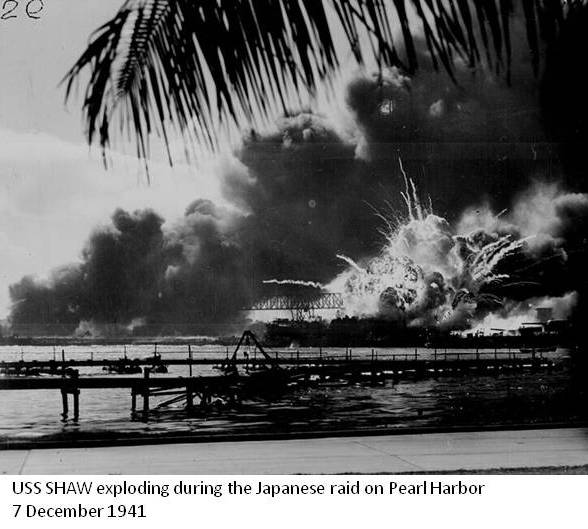

WWII
US History
World War II
Introduction
 World War II was not the bloodiest war in American history, that unfortunate distinction goes to the Civil War, nor was World War II America's longest war. The American Revolution and the Vietnam War both outlasted it, and at this writing America's conflicts in Iraq and Afghanistan have no definite end in sight. In terms of its impact on American society and the world, however, World War II certainly ranks among the biggest events in American history and in the history of the world.
World War II was not the bloodiest war in American history, that unfortunate distinction goes to the Civil War, nor was World War II America's longest war. The American Revolution and the Vietnam War both outlasted it, and at this writing America's conflicts in Iraq and Afghanistan have no definite end in sight. In terms of its impact on American society and the world, however, World War II certainly ranks among the biggest events in American history and in the history of the world.
As the decade of the 1930s closed, America was struggling to get out of the worst depression in its history. American presence was felt worldwide and American commerce and industry, despite the pullbacks of the Depression era, weighed heavily in the international economic balance of power. Yet in the late 1930s America was withdrawn, focused on itself, and Americans were not sure that the path which lay ahead would lead to renewed prosperity and dignity. Franklin Roosevelt was by many measures the strongest president in American history, but his first two terms had not been without serious controversy. The New Deal had been for some a beacon of hope; for others it was a symbol of government run amok. Although there was much in American society to celebrate, dark clouds had not yet disappeared over the horizon.
Americans of 1945, if they had taken the time to look back on themselves a mere six years earlier, would not have recognized the face in the mirror. Except for the attack on Pearl Harbor, American soil had been virtually untouched by war. The massive destruction of infrastructure and resources that devastated every other major nation on earth had no parallel in the New World. American industry had supplied the lion's share of the matériel and equipment needed to fight the Axis. The American workforce, bolstered by millions of female workers, was capable of stupendous feats of production. Although the war had cost billions of dollars, the American economy was strong and healthy. Demand for consumer goods had been put aside while factories produced weapons and supplies for war. When the guns fell silent, those demands would come roaring back as industry converted from producing wartime to peacetime goods. The demand for automobiles, appliances, and homes would fuel the passions that produced the boomer generation.
In the international arena America stood alone. The United States was the only superpower, and the only atomic power. In the postwar years American generosity would help to rebuild the devastated cities of Europe, and American political wisdom would help to shape a modern democracy in Japan. United Nations would be centered in New York City, the unofficial capital of the world. The specter of communism would be contained, and America stood ready to meet whatever challenges the rest of the world might present. In some ways the first years after World War II were the high point of American history, the peak of American prestige and power. Americans had won the "good war" and were prepared to lead the world for the rest of the century. The 20th century was the American Century.
World War II Leaders
In every country and government type, there is always one person at the political top who makes the key decisions and determines the national policy, or leads to it - the national leader.
Europe at War
 In August 1939 German Foreign Minister Joachim von Ribbentrop engineered a Non-Aggression Pact with the Soviet Union's Josef Stalin, clearing the way for German invasion of Poland. Minister of Propaganda Joseph Goebbels mounted a virulent, lengthy anti-Polish propaganda campaign, full of degrading anti-Polish ethnic rhetoric, and the SS concocted a phony incident along the German-Polish border. On September 1, 1939, the German Wehrmacht rolled across the Polish border and demonstrated to the world for the first time the tactics that would become known as Blitzkrieg. World War II in Europe had begun.
On September 3 France and Great Britain declared war on Germany, but the campaign in Poland was over in a matter of weeks, long before France or Great Britain were capable of any kind of military action. While the Russians were taking advantage of their pact with Hitler to invade Finland, which held out until March 1940, the rest of the war came to a halt. During the winter of 1939–40 the war was called a phony war or "Sitzkrieg," as nothing of any significance happened aside from the SS beginning its ethnic cleansing of Warsaw and the rest of Poland.
British Prime Minister Neville Chaimberlain announces the beginning of World War II
In the spring of 1940 Hitler invaded Denmark, Norway, and Netherlands. Then his army rolled through Belgium and flanked the French Maginot Line, a defensive wall built at the cost of millions of francs per mile, and France capitulated in six weeks. Hitler accepted the French surrender in the very same spot on which Germany had surrendered in 1918, after which he did a gleeful little jig, reveling in his moment of revenge. While Germany was attacking France, Italy declared war on France, causing President Roosevelt to claim, "On this tenth day of June, 1940, the hand that held the dagger has struck it into the back of its neighbor."
Hitler's Plan for Great Britain: Operation Seelöwe (Sea Lion)
With France occupied and the French Vichy government more or less in collaboration with Germany, Hitler now stood "astride the European continent like a colossus." Neutral Spain was friendly to Germany, and neutral Sweden was no threat. Soviet Russia was engaged with the Finns, and Hitler now turned his attention to Great Britain, which had not been successfully invaded since the Norman conquest of 1066. To accomplish the feat Germany would have to achieve air control over the English Channel, and Hitler ordered Hermann Göring to use the Luftwaffe to prepare the way. The resulting air war became known as the Battle of Britain, which was won by the Royal Air Force (RAF) and about which Winston Churchill later said, "Never in the field of human conflict was so much owed by so many to so few."
Infuriated by the failure of his invasion plan and determined to break the British will, Hitler ordered a bombing campaign that was known as the "Blitz of London," and German bombers rained destruction on British cities night after night during the winter of 1940–41.
Operation Barbarossa: Hitler Invades Russia
 In June 1941 Hitler, still frustrated by his failure to conquer Great Britain, turned his wrath against his former partner, the Soviet Union, his fatal mistake. (Napoleon had made the same miscalculation in 1812.) Hitler felt that the Soviet Union was hampered by internal weaknesses of the communist system. He was aided by the fact that even when intelligence reports reached Premier Stalin that an invasion was imminent, Stalin apparently did not believe them and failed to mobilize the Soviet army.
In June 1941 Hitler, still frustrated by his failure to conquer Great Britain, turned his wrath against his former partner, the Soviet Union, his fatal mistake. (Napoleon had made the same miscalculation in 1812.) Hitler felt that the Soviet Union was hampered by internal weaknesses of the communist system. He was aided by the fact that even when intelligence reports reached Premier Stalin that an invasion was imminent, Stalin apparently did not believe them and failed to mobilize the Soviet army.
Over four million German troops with thousands of tanks and guns crossed the line of departure of June 22. German Panzer units with air support initially drove deep into the heart of Russia, reaching the outskirts of Moscow. The Soviets launched a counteroffensive in December in what was the largest battle with the greatest number of combatants ever fought anywhere. Hitler's hopes for a quick victory were smashed, and the Russian winter and the huge Soviet Army ultimately proved be too much for Hitler's Wehrmacht. With the loss of an army of 600,000 men at Stalingrad in late 1942 through early 1943, the tide in Europe turned, and the huge Russian army, supplied heavily by American industry, began to drive the Germans off Russian soil and back toward Berlin. Stalingrad was the great turning point of the war in Europe.
December 11, 1941. Following the Japanese attack on Pearl Harbor, Hitler declared war on the United States, which, along with the Soviet victory at Stalingrad, sealed Germany's fate. Although formally allied, Germany and Japan fought in separate spheres; World War II was really two wars going on at the same time, one in Europe and one in Asia.

Interactive map of Operation Barbarossa
World War II: The "Good War"

In a letter to Josiah Quincy on September 11, 1773, Benjamin Franklin wrote, "There never was a good war or a bad peace." Interesting thought. Interesting date. Author Studs Terkel wrote a book about World War II, which he called "The Good War," a sentiment often felt, most probably because America's enemies of World War II—Nazi Germany and militarist Japan—were of such evil character that anything done to defeat their imperial dreams was deemed good. In the aftermath, most Americans accepted that view of a "good" war, at least for a decade or two. All the same, although World War I, the Great War, was probably the worst war ever fought for the soldiers on the front lines, World War II was nevertheless unprecedented in the amount of destruction caused and the number of lives lost.
Despite its being called the "good war," no one could ever claim that World War II was anything but a horror; at its end at least fifty million human beings had perished—a level of destruction scarcely imaginable, even after the carnage of World War I. In 1939 when the war began in Europe, one had a sense that it was nothing but the latest round in an endless cycle of violence going back through the centuries—to the Hundred Years War, the Thirty Years War, the War of the Roses, the imperial wars, and wars of revolution—and only a fool could hope this would be the last war. Woodrow Wilson had dreamed of making the world safe for democracy, but now it seemed as if what happened at Versailles had merely made the world safe for totalitarian dictators or appeasers.
So once again the world was plunged into darkness, into the hideous abyss of destruction and despair until the nations emerged on the other side to yet another world, full of uncertainty, shrouded by the clouds of radiation that floated across the heavens from Hiroshima and Nagasaki. People wondered, "What will the next one be like?"
Following are some important factors about World War II in general:
- World War II was in many ways a continuation of World War I. There can be no doubt that the peace settlement arrived at during the Versailles Conference of 1919 contained within it the seeds of World War II, in that it almost certainly guaranteed that Germany would seek retribution.
- The technological advances that had begun in the First World War were carried even further in World War II, culminating in the use of the atomic bomb against Hiroshima and Nagasaki in August 1945.
- The United States was much more heavily involved in World War II than World War I, although the war had been raging for years before the United States became directly involved. Before the United States was formally involved, America was directly and indirectly assisting the British in the Atlantic. In the end some 13–14 million Americans served in uniform during the war period, and American factories and plants produced almost 30 percent of all the materiel used by the Allies.
World War II: America at War, Overview
 As previously discussed as militarists took control of the Japanese government, Japanese policies in the Far East became ever more aggressive. Japan sought to create what it called the Greater South East Asia Co-Prosperity Sphere, in which Japanese influence would extend throughout South Asia, Southeast Asia, and the Pacific region. The fancy name meant nothing more than the idea of a Japanese economic empire. Japan needed iron, oil, rubber, tin, and other raw materials, and thus needed to control the economic resources of all of Asia in order to feed her appetite for war. As America became increasingly hostile toward Japanese ambitions and began to tighten trade restrictions, the Japanese warlords began to plot a strategy to confront America. Because the Philippine Islands had become U.S. territory as a result of the Spanish-American War, that American possession due south of Japan lay smack in the middle of Japan's area of interest. Japanese leaders believed it inevitable that conflict would eventually erupt between the Empire and the United States.
In order to get the upper hand quickly, Japan planned and executed a lightning strike against the Pacific Fleet in Pearl Harbor, Hawaii. The plan was agreed upon in late summer 1945, and soon the Japanese fleet was sailing across a remote area of the North Pacific, preparing to attack Pearl Harbor from the northwest. The story of the attack on Pearl Harbor has been told in detail, and assertions that President Roosevelt knew the attack was coming and did nothing about it have been laid to rest. The Japanese attack was a tactical victory, but it was one of the worst strategic blunders in military history. Although American battleships and cruisers were badly damaged or destroyed, as luck would have it the aircraft carriers were at sea that day and thus were untouched. Because the aircraft carrier became the dominant naval weapon in the Pacific theater during the Second World War, the fact that the aircraft carriers were saved was a crucial factor in the future conduct of the war.
Eyewitness: Attack at Pearl Harbor
Naval History & Heritage: Pear Harbor Raid
FDR's Day of Infamy Speech Transcript - Courtesy of the Franklin D. Roosevelt Library Digital Archives.
 With the attack on Pearl Harbor, the "day of infamy," the United States immediately declared war on Japan. The question then became, what about Germany? Germany, Italy, and Japan had concluded an agreement, the Tripartite Pact, in 1940, which was called the Rome-Berlin-Tokyo Axis. The pact did not require Germany to enter a war started by Japan, such as the one begun by the attack on Pearl Harbor. Nevertheless, it was clear that Germany and Japan saw themselves having a common enemy, and thus on December 11, 1941, Hitler declared war on the United States. As a result, the U.S. found itself confronted with a two-front war—facing two powerful enemies, both of whom had been honing their war-making skills for several years. America and Great Britain shared two common enemies, since the Japanese also attacked British possessions in Asia.
A recent (2001) book, The New Dealers' War by Thomas Fleming, goes into reasons for the German war declaration in detail. Fleming claims that President Roosevelt manipulated Germany into declaring war on the United States, which Germany did on December 11, 1941, three days after the United States declared war on Japan. Fleming lays out the scenario on pages 30–36 of his book. The situation was that Hitler had his hands full with Russia and did not want to force the United States into the war. But Japan urged Germany to join in, and Winston Churchill also wanted the United States in to take pressure off Great Britain, who by then stood all alone on the western front. Fleming writes:
On December 9, 1941, Franklin D. Roosevelt made a radio address to the nation that is seldom mentioned in the history books. It accused Hitler of urging Japan to attack the United States. "We know that Germany and Japan are conducting their military and naval operations with a joint plan," Roosevelt declared. "Germany and Italy consider themselves at war with the United States without even bothering about a formal declaration." This was anything but the case, and Roosevelt knew it. He was trying to bait Hitler into declaring war, or, failing that, persuade the American people to support an American declaration of war on the two European fascist powers (Fleming, The New Dealers' War, Basic Books, 2001, p. 34).
In any case, Germany did declare war. Now the United States was in all the way. Perhaps WWII really was, as President Woodrow Wilson had hoped in 1917, the "war to end all wars." Although for a time after 1945 many in the world contemplated the possibility of World War III, that has not yet occurred.
FDR's Fireside Chat 19: On the War with Japan, December 9, 1941 Transcript
Pearl Harbor
Pearl Harbor was not so much a battle as a one-sided attack that came with such shock and surprise that those being attacked were scarcely able to defend themselves. The historic controversies surrounding the Japanese attack on Pearl Harbor have centered on the issue of who knew what and when.
University of Maryland historian Gordon W. Prange, working with associates Donald M. Goldstein and Katherine V. Dillon, has covered the first six months of America's involvement in World War II in considerable detail in four books:
|
At Dawn We Slept: The Untold Story of Pearl Harbor.
|
The New York Times called Prange's At Dawn We Slept "impossible to forget." Prange's tireless research into the entire saga of Pearl Harbor leaves little doubt as to the validity of his conclusions. Includes photographs.
|
|
Pearl Harbor: The Verdict of History.
|
In this sequel to At Dawn We Slept, Prange goes into considerable detail to examine how the attack came about and whether there really was some sort of conspiracy involving the president to conceal foreknowledge of the attack in order to thwart the "America First" movement, whose members opposed American entry into the war.
|
|
December 7, 1941: The Day the Japanese Attacked Pearl Harbor.
|
By Donald M. Goldstein, based on work of Gordon Prange. In this book Goldstein gets into the chronological details of the "date which will live in infamy."
|
|
Miracle at Midway.
|
Prange's history of the Battle of Midway details the turning point of World War II against Japan. Prange examined both Japanese and American sources, eyewitness accounts, and so on.
|

What can we conclude about President Franklin Roosevelt and Pearl Harbor? We can certainly say that President Roosevelt knew that Japan was up to no good and that its war against China, which had been going on since 1937, was likely to expand into other parts of East and Southeast Asia. One glance at a map will show that the United States' Philippine Islands, located squarely in the center of Japan's sphere of interest (Indonesia, Indochina, and the surrounding regions) were likely to be attacked. It could, therefore, be assumed that any Japanese action would begin first against the Philippines, and General Douglas MacArthur's preparations were receiving full support from Washington.
Defenses throughout the Pacific, in fact, were being beefed up in anticipation of possible Japanese action. But the charge that FDR knew that the December 7 attack was coming, leveled in part to deflect blame from the commanders on the scene in Hawaii, fails to stand up on many grounds.
First, if a conspiracy had existed to conceal knowledge of an impending Japanese attack, it would have had to involve top military leaders, including Admiral Leahy, FDR's chief of staff, the secretaries of the army and navy (both Republicans), and other officials of medium to high rank, all of whom would necessarily have been aware of any communications revealing specific Japanese intentions. Second, Franklin Roosevelt loved the navy. He even took vacations on warships and guided Navy ships into waters off his beloved coast of Maine. That he would have deliberately sacrificed lives and ships to make what amounted to a political point is inconsistent with everything we know about Roosevelt.
Furthermore, if FDR had known the attack was coming and wished to allow a surprise attack to go forward, he could still have directed army and navy forces in Hawaii to be placed on high alert in a battle-ready status under secret orders, without revealing to the world that he knew the attack was coming. The surprise attack would still have had the same shock value to the American people, but it could have been far less devastating. Despite all the speculation, it is exceedingly doubtful that Roosevelt actually knew the time and location of the Japanese attack.
Certainly there is substantial evidence that a lot of people ignored warning signs. The Japanese aircraft were picked up and presumed to be B-17s coming in from the States, never mind that they would have been miles off course and going in the wrong direction; a Japanese submarine was spotted off the mouth of Pearl Harbor; a warning telegram went astray; and so on. All of those things amounted to massive failures of communication and intelligence, but they fall far short of creating evidence of a deliberate conspiracy. The United States was surprised, shocked, and embarrassed by Pearl Harbor.
As the Battle of Midway was soon to demonstrate, however, the United States was resilient, resourceful, and more than ready to take up the fight. Army Chief of Staff, General George C. Marshall, and Chief of Naval Operations, Admiral Ernest J. King, begin organizing America's military forces for action in coordination with their British counterparts. Marshall's superb performance throughout the war and after has placed him with Washington and Grant as America's most important military leaders. He later served as Secretary of State under President Harry Truman and was author of the Marshall Plan.
Attack on Pearl Harbor Newsreel
The Lion and the Eagle
 Cooperation between the United States and her British allies was intensive and very effective throughout World War II. Franklin Roosevelt and Winston Churchill had met in August 1941 and agreed upon what became known as the "Atlantic Charter." Although it was merely a policy statement, the two leaders understood that they had common interests in continuing what Woodrow Wilson had called a war to save democracy. With Japan in control of much of the Far East and Germany in control of most of Europe, the United States and Great Britain were indeed the only two great democracies left fighting against the Axis.
Cooperation between the United States and her British allies was intensive and very effective throughout World War II. Franklin Roosevelt and Winston Churchill had met in August 1941 and agreed upon what became known as the "Atlantic Charter." Although it was merely a policy statement, the two leaders understood that they had common interests in continuing what Woodrow Wilson had called a war to save democracy. With Japan in control of much of the Far East and Germany in control of most of Europe, the United States and Great Britain were indeed the only two great democracies left fighting against the Axis.
Faced with a two-front war, the United States and Great Britain quickly concluded that Germany was the greater threat to the survival of humanity, and thus the two nations adopted a "Germany first" policy. In general that strategy was followed, although the United States was forced to change its priorities when the Japanese occupied the island of Guadalcanal in 1942. From there they could harass all U.S. shipping being used to build up American forces in Australia, the base of operations for the war against Japan.
Thus in August 1942 U.S. Marines went ashore at Guadalcanal and fought a long, bloody six-month campaign to gain control of the island. General Douglas MacArthur was in command of army troops in Australia, and Admiral Chester Nimitz commanded navy, marine, and army units in the Central Pacific. Soon MacArthur and Nimitz began a two-pronged assault upon Japan that consisted of a series of amphibious operations along the coastline of Indonesia and through the island chains of the Pacific. Marines and soldiers paid a high price in their battles against the Japanese, who had been digging defensive positions in those islands for almost twenty years.
The Pacific Theater
The turning point in the Pacific war occurred early at the two naval battles of Coral Sea and Midway. As mentioned earlier, U.S. aircraft carriers had been lucky enough to escape the attack at Pearl Harbor. When the Pacific Fleet discovered the Japanese moving toward Wake Island, they set out to meet them, and those two epic battles took place. These were historic encounters in that the two fleets were never within sight of each other but fought only with the aircraft from their carriers. By the end of the Battle of Midway, the Japanese had lost four aircraft carriers, and her dominance of Pacific waters was severely threatened.
From 1943 through most of 1945, the Americans and Japanese slugged it out on island after island, (the U.S. military strategy in the South Pacific was dubbed "island hopping"), and along the coast of Indonesia until General MacArthur was eventually able to recapture the Philippine Islands. In early 1945 marines and soldiers took Iwo Jima and Okinawa, the last stepping-off spot before a planned invasion of Japan was to take place.
The European Theater
Meanwhile the American army, trained but untested in combat, was not prepared to launch an attack directly on the European mainland in 1942. With Lieutenant General Dwight Eisenhower in command, the first American offensive action in the European Theater was Operation Torch, the invasion of North Africa. Initially facing the armored divisions of Field Marshal Rommel, the Americans were beaten up pretty badly. But under the leadership of generals such as George Patton and Omar Bradley, American soldiers soon found their fighting spirit. With the help of the British under Field Marshal Montgomery, they began to roll back the Germans in North Africa.
The next logical step was for Americans to cross the Mediterranean along with the British and capture the Island of Sicily, which was done with all dispatch. After Sicily, an Allied assault took place on the boot of Italy and the beaches of Anzio and Salerno. The Italian campaign proved to be extremely difficult for two reasons. First, the mountainous terrain of Italy made advancing very difficult; and, second, the German troops in Italy were commanded by Field Marshal Kesselring, one of Germany's most competent commanders.
The Americans finally reached Rome in 1944, about the same time as D-Day occurred. At the same time the Italians got fed up with Mussolini, overthrew his government, and hanged him. At that point Italy was officially out of the war. But the German army was still in Italy, and the fighting continued between the Americans and Germans in northern Italy until the war ended in 1945.
Italy remained a partner of Germany through 1944. Hitler realized early in the war that Italy was as much of a drain on his resources as an asset to his plans. For example, he recognized the need to send Field Marshal Erwin Rommel and the Afrika Korps into North Africa to support Italian operations there. He also sent one of his best generals to defend Italy, Field Marshal Kesselring. As noted above, Hitler turned on Russia in the summer of 1941, and that huge campaign occupied the bulk of German forces. So the need to defend Italy with German troops further weakened Hitler's western front.
By early 1944 the Americans and British, with help from Canadians and the French soldiers who had survived the German invasion in 1940, planned the final assault on the fortress of Europe. While the Russians occupied much of Germany's military might on the Eastern front, American and British troops crossed the English Channel on D-Day, June 6, 1944, with the largest amphibious invasion in history. The fighting on the main beach, Omaha Beach, was bloody, and for the first several hours victory was by no means assured. A certain amount of German hesitation, and the disruptions caused by massive parachute drops of three American and British airborne divisions behind the beaches eventually allowed the allies to gain a foothold; the rollback of Germany on the western front was begun.
Paris was liberated in August 1944, and by the end of that year the Americans were approaching the Rhine. Following the bloody Battle of the Bulge,* which temporarily set the allied forces reeling, Americans crossed the Rhine in March 1945, along with their British allies, and as the German armies crumbled under massive air assaults, and as their cities were reduced to rubble, German resistance gradually fell.
With the end in sight, Adolf Hitler committed suicide in his bunker in Berlin, and the Germans finally capitulated to the Russians and Americans. The war in Europe was over. V-E Day, for Victory in Europe, was May 8, 1945. It was president Harry Truman's 61st birthday.
Quiz
Resources
America.gov Archive http://www.america.gov/publications/books/history-outline.html
The Avalon Project http://avalon.law.yale.edu/default.asp
faqs.org http://www.faqs.org/cia/index.html
Discovery Channel http://www.yourdiscovery.com/
Eye Witness to History.com http://www.eyewitnesstohistory.com/index.html
HISTORYnet.com http://www.historynet.com/
Internet Archive http://www.archive.org/
Jewish Virtual Library http://www.jewishvirtuallibrary.org/
LIFE http://www.life.com/
Maginot Line at War 1939-1940 http://mysite.verizon.net/vzev1mpx/maginotlineatwar/index.html
Military History Online http://www.militaryhistoryonline.com/
Naval History & Heritage http://www.history.navy.mil/index.html
Shmoop http://www.shmoop.com
United States Holocaust Memorial Museum http://www.ushmm.org/museum/
U.S. Army http://www.army.mil/features/
Wikimedia Commons http://commons.wikimedia.org/wiki/Main_Page
World War II Database http://ww2db.com/index.php
World War II Multimedia Database http://www.worldwar2database.com/